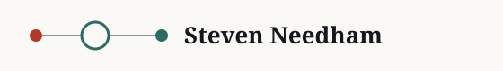
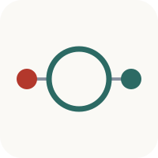
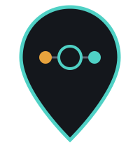
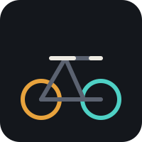
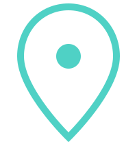
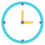
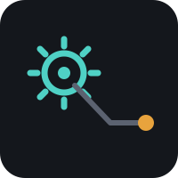
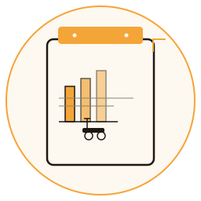
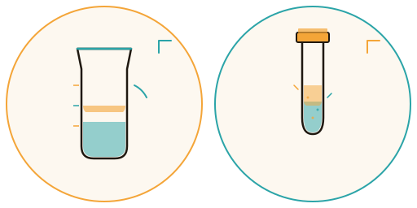

Canonical marks and functional glyphs for the dark portfolio surface, warm paper surface, and bright sunny variant. Paths shown below are stable repository paths. Usage must also meet the accessibility acceptance layer: meaningful graphics need text alternatives; decorative marks use empty alternative text.
Identity system
Use the matching dark or light file for its named surface.
Horizontal / dark
assets/icons/lockup-horizontal-dark.svg

Horizontal / paper
assets/icons/lockup-horizontal-light.svg
Core route mark
assets/logo.svg
Square / dark
assets/icons/icon-square-dark.svg

Square / paper
assets/icons/icon-square-light.svg

Route pin
assets/icons/mark-route-pin.svg
Mobility and systems
Hairline functional glyphs preserve the route-and-node drawing language.

Bike
assets/icons/bike.svg
Scooter
assets/icons/scooter.svg

Location pin
assets/icons/pin.svg
Map layer
assets/icons/map-layer.svg
Network hubs
assets/icons/network-hubs.svg
Document download
assets/icons/document-download.svg
Social channels
Canonical social marks use the same restrained square treatment and remain recognizable at small sizes.
Bluesky
assets/icons/bluesky.svg
Facebook
assets/icons/facebook.svg
GitHub
assets/icons/github.svg
Hey Famm
assets/icons/heyfamm.svg
Instagram
assets/icons/instagram.svg
LinkedIn
assets/icons/linkedin.svg
Linktree
assets/icons/linktree.svg
Threads
assets/icons/threads.svg
TikTok
assets/icons/tiktok.svg
WhatsApp
assets/icons/whatsapp.svg
YouTube
assets/icons/youtube.svg
Utility icons
Functional glyphs for actions, indicators, and interactive states. Teal/amber/slate palette.

Clock
assets/icons/clock.svg
Location
assets/icons/location.svg
Search
assets/icons/search.svg
History
assets/icons/history.svg
User direction
assets/icons/user-direction.svg
Gauge
assets/icons/gauge.svg
Lightning check
assets/icons/lightning-check.svg
Document check
assets/icons/document-check.svg
Consulting services
Icons representing strategic consulting engagements and service offerings.
Hourly consulting
assets/icons/01-hourly-consulting.svg
Large event readiness
assets/icons/02-large-event-readiness.svg
GTM competitive analysis
assets/icons/03-gtm-competitive-analysis.svg
Fractional ops retainer
assets/icons/04-fractional-ops-retainer.svg
Operator performance coaching
assets/icons/05-operator-performance-coaching.svg
Digital readiness assessment
assets/icons/06-digital-readiness-assessment.svg
Quick wins audit
assets/icons/07-quick-wins-audit.svg
SOP documentation overhaul
assets/icons/08-sop-documentation-overhaul.svg

Automation data pipeline
assets/icons/09-automation-data-pipeline.svg
Fleet ops dashboard
assets/icons/10-fleet-ops-dashboard.svg
Civic tech mapping
assets/icons/11-civic-tech-mapping.svg
Take me out to lunch
assets/icons/12-take-me-out-to-lunch.svg
Permit SLA compliance audit
assets/icons/13-permit-sla-compliance-audit.svg
Vehicle demand performance
assets/icons/14-vehicle-demand-performance.svg
Communication platforms
Icons for common business communication and scheduling tools.
Calendly
assets/icons/15-calendly.svg
Google Meet
assets/icons/16-google-meet.svg
Zoom
assets/icons/17-zoom.svg
Microsoft Teams
assets/icons/18-teams.svg
Webex
assets/icons/19-webex.svg
Telephone
assets/icons/20-telephone.svg
Email
assets/icons/21-email.svg
Setmore
assets/icons/28-setmore.svg
Payment methods
Icons for financial transactions and digital payment services.
Venmo
assets/icons/22-venmo.svg
PayPal
assets/icons/23-paypal.svg
Wire transfer
assets/icons/24-wire-transfer.svg
Cash App
assets/icons/25-cash-app.svg
Buy Me a Coffee
assets/icons/26-buy-me-a-coffee.svg
Ko-fi
assets/icons/27-ko-fi.svg
Geographic / Regional
State and regional markers available in multiple fill and stroke variants for flexible application.
Ohio / outline
assets/icons/29-ohio-outline.svg
Ohio / fill teal
assets/icons/29-ohio-fill-teal.svg
Ohio / fill orange
assets/icons/29-ohio-fill-orange.svg
Ohio / fill black
assets/icons/29-ohio-fill-black.svg
Ohio / stroke teal
assets/icons/29-ohio-stroke-teal.svg
Ohio / stroke orange
assets/icons/29-ohio-stroke-orange.svg
Ohio / stroke black
assets/icons/29-ohio-stroke-black.svg
Research & systems (sunny theme)
Purpose-built icons for research, data collection, and labs. Displayed in sunny theme variant with mixed amber and teal accents.

Field report
assets/field-report-icon-sunny.svg

Urban Transit Labs icons
assets/urban-transit-labs-icons-sunny.svg
Editorial photography
Use documentary images as evidence of place and operating context. Treatments stay restrained, brand-neutral, and legible without relying on a decorative overlay.